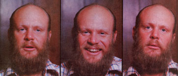

Those of you who read our overview article on biodynamic/French intensive gardening will already be familiar with the nature of John Jeavons' work. To summarize some of the information from that earlier article, Jeavons has made it his responsibility-over the past nine years-to subject the biodynamic/French intensive method developed by Englishman Alan Chadwick to careful yield and technique analysis.
In the process, John has taken the original system-which combines deep (24") digging, organic fertilizers, companion planting, interplanting, and so forth-and made it accessible to the backyard or subsistence farmer (who can, Jeavons says, "put in 10% ofthe effort and get 90% of the yield ").
MOTHER wanted to learn more about this remarkable fellow. Why, for one thing, did he abandon a career in systems analysis to take on the next-to-impossible mini-farm project at less than minimum wage? Furthermore, how does Jeavons plan to reduce the space necessary to grow a $20,000 cash crop to a mere 1/8 acre . . . and cut the land needed to produce a balanced one-person vegetarian diet to as little as 700 square feet?
Staffer Bruce Woods sought the answers to these and other questions during a recent daylong interview with John Jeavons. This edited transcript of their talks may well increase your understanding of the food production problems that will soon face our world, and it will also let you see a few of the ways that the looming dangers can be overcome . . . by methods that will enrich the world's soil-and perhaps the lives of many men and women-in the process!
PLOWBOY: John, you have, as our tour of the Common Ground experimental gardens clearly demonstrated, taken a piece of worse than marginal land-in the middle of an industrial park, no less-and transformed it into an incredibly productive mini-farm . . . all the while pioneering intensive gardening techniques that ' just may help feed the world some o day. How is it that you came to be the foremost proponent of the practical use of biodynamic/French intensive methods? Did your background influence you toward a career in horticulture?
JEAVONS: No, not really. I was born in Texas-into an army family-and moved around a lot during my early years. After finishing high school in 1960, I enrolled at Yale University, majoring in political science. During my college years I worked-over summer vacations-as a systems analyst for Motorola Aerospace and Electronics. The job involved such tasks as reducing the amount of paper work people in the firm had to handle . . . sort of helping the engineers do more with less.
Immediately after my graduation in 1966, I took a position with the United States Agency for International Development. However, I decided-after my first nine months with USAID-that I wasn't being allowed to perform as effectively as I could. So, since my wife Betsy wanted to finish her degree work at Stanford University, we moved to Stanford, California . . . where I took a position with Kaiser Aerospace and Electronics, doing about the same kind of work as I'd done for Motorola.
PLOWBOY: I can understand how your systems analysis experience helped prepare you for evaluating the yield potential of the biodynamic/French intensive method, but how did you become interested in gardening itself?
JEAVONS: Well, I raised my first garden-growing vegetables, mostly-back in 1963. The "training" for the work I do now, however, came from a number of sources and trickled in over the years. I remember, for example, visiting an aunt and uncle who had a farm in Pennsylvania-this was when I was very young-and being absolutely fascinated by their garden.
Also, since my father was killed in the Second World War, I began taking on house and yard work at an earlier age than many other children might have done. I had any number of outside jobs, too . . . usually involving the maintenance of lawns and flowerbeds in whatever neighborhood we lived in.
But, as you can see, none of my early experiences with horticulture was overwhelming enough to lead me toward a career in gardening. However, I was able to notice, for instance, that our grapefruit tree next to the chicken coop thrived while its neighbors didn't do so well. I wouldn't have had access to such lessons had I been raised exclusively in the inner city.
In fact, I'm still amazed at the preconceptions held by some of our apprentices who hail from urban environments.
Many of the young men and women almost do believe the old cliché about vegetables coming from cans.
At any rate, I had behind me years of interest in gardening-as well as a fantasy about eventually leaving the treadmill to try my hand at farming-by the time Betsy and I moved to Stanford. So, when a good friend of mine at Kaiser actually bought himself a raisin vineyard-really went ahead and made the "big move"-my enthusiasm snowballed.
PLOWBOY: What direction did your interest take?
JEAVONS: Perhaps partly because I've always been concerned with making the most efficient possible use of resources, I became curious about just how small an area could provide a complete livingincluding food and income-for one individual. The more times I put the question to people, though, the more different acreage figures-or plain "don't know's" -I received. So one day I decided that, if I wanted to find the answer, I'd have to do the legwork myself.
I was lucky, in the fall of 1969, to be offered a job as Chief of Business Services for the Stanford University Library system. The position involved systems analysis again, but it was a little more "human" in orientation than the other jobs I'd held . . . and it put me in a position where I could, during "off" time, do indepth research on small-scale farming and related subjects.
In the course of such studies, I came upon the assertion that the problem of world hunger couldn't be solved, because-given the capability of available agricultural techniques-there wouldn't be enough arable land in the world to grow food for everyone!
The thought haunted me until I looked up the current United Nations estimates on just how much arable land did exist in different parts of the world, and divided the figures by the amount of space needed to grow one individual's yearly supply of food in the various lands.
I discovered that the United States had about 4.2 times the amount of cropland deeded to feed our populace, given our usual diets and agricultural practices, while-worldwide-there was only 1.9 times the required acreage available. The study served to focus my attention more precisely upon the possibility of producing significant amounts of food in very small amounts of gardening space. Then, in 1971, a sequence of events began that eventually led me to the work I'm doing today.
PLOWBOY: Can you summarize those happenings for us?
JEAVONS: First, in September of that year, I attended a four-hour class in the biodynamic/French intensive method-I often just refer to it as biointensive-instructed by Stephen Kaffka . . . who was Alan Chadwick's senior apprentice. Alan is, as I'm sure you know, responsible for developing the method.
I had, of course, read a bit about biointensive horticulture in the course of my studies, but Steve's class really made the abstract concepts seem workable to me. I followed up on that lecture by visiting the garden that Chadwick and his helpers had established in Santa Cruz. It had been reported-in various journals-that Alan was producing four times the average commercial crop yield in his specially prepared beds. However, nobody had bothered to do the work necessary to document the size of the yields or even how-in terms of specific techniques-the results were achieved.
It was obvious to me, from the gardening I'd done, that the beds were producing at least four times what a conventional garden could from the same amount of space . . . so I decided to experiment with the method on my own.
To that end, I took part in a series of classes that Chadwick offered, read everything about intensive gardening techniques that I could get my hands on, began practicing in a backyard garden of my own, and so on.
I found, however, that there seemed to be a number of "holes" in the available information . . . details that appeared contradictory because some information had been left out during the classes and presentations. In order to fill in such gaps, I visited Alan and spent three two-hour sessions clearing up the specific "missing" points I'd noticed.
Then, in January of 1972, I became involved with an environmentally oriented citizens' group-Ecology Action of the Mid-Peninsula-that my wife had worked with on a recycling program in 1971. The project had been a successful one . . . so much so, in fact, that Ecology Action had eventually turned its ongoing recycling center over to the city and had a little cash left to invest in another program.
Among the ideas considered were an organic gardening supply store and a community gardening area. As you can imagine, the plans appealed to me. I approached the group's board of directors about the possibility of my handling the project and undertaking a biointensive research program on part of the proposed community garden's site.
It was agreed that I could do so, but the board members pointed out that the available start-up capital-a total of $4,000-would have to be used to establish the store . . . and that Craig Cook, who signed on as codirector, and I would have to raise any additional funds ourselves.
Of course, we also had to find a piece of land on which to locate the gardens.
After three months of searching, we were able to work out a no-cost lease, with free water, at the Syntex Corporationa pharmaceutical firm that had helped Ecology Action with the recycling program-giving us access to the four acres we're using today.
Alan Chadwick came out to inspect the land before we went ahead with the deal. He felt the site was atrocious, which I have to admit it was. We've been able to improve the soil over the years, of course, but-when we began-it contained about 30% rock and 30% clay . . . had no nitrogen, no organic matter, and only a trace of phosphorus and potash . . . and registered a pH of 8. Worse yet, I couldn't force a spade more than 1/16 of an inch into the ground.
As you can imagine, the decision as to whether or not to go ahead was a difficult one to make . . . considering the long odds that we would have to face. We decided to take a stab at the project-of course-and as it turned out, all the cash that Craig and I had managed to raise was gone before we had dug the first bed. In fact, Betsy and I went $8,400 in debt just trying to keep the garden alive for the first two years. We never would have made it without faith and the help of a very dedicated staff.
I was determined, though, to find out just how effective the method could be. And when you're trying to learn something that nobody else knows, you just have to settle down and do it . . . regardless of how difficult the educational process might be.
PLOWBOY: It must have been frightening to leave a relatively big-dollar professional job to take on such a long-shot project at less than minimum wage.
JEAVONS: It was, but we had a few hidden advantages from the start. Betsy and I had this goal-that dated back to the beginning of our marriage-of learning how to live comfortably on $1,000 a year. We wanted to accomplish the aim through careful planning, however, rather than by just heading back into the woods to half-starve. So, with that ultimate goal in mind, we'd been stacking the economic cards in our favor for some time. We'd established ourselves in a house with a low monthly payment, for instance, and generally tried to stockpile resources.
Of course, the survival of the garden has been a result of plain old luck on occasion, too. Back in 1973-when Betsy and I were in debt, the Common Ground coffers were flat empty, and a bulldozer was literally standing by the gate to scatter our compost piles-a psychic walked up to me. The woman claimed she'd read about our project nine months before and had recently had the feeling that we needed help. She gave us $1,100, which-along with matching funds from a number of other sources-enabled us to hang on until we got the first edition of our book, How to Grow More Vegetables, in print. Now we're able to bring in from 50 to 80% of our "keepin' on" income from our publications.
PLOWBOY: Although curiosity about how small a piece of land could support one personas well as your fascination with the biointensive method-must have had a lot to do with your tackling this job . . . simple curiosity doesn't seem to be reason enough to devote nearly a decade to such hard and often unrewarding labor. Were there any more urgent concerns that drove you to keep on trying when it looked as if there was no hope of success?
JEAVONS: Yes, I guess you could say that the drive came-partly at least-from intuition. By reading between the lines of the research that I was doing back in the early 1970's, I sensed a pressing need for small-scale growing methods that were very productive and ecologically sound. And, of course, the nature of that need is now becoming more and more apparent every day.
PLOWBOY: Could you be more specific?
JEAVONS: Certainly . . . we're facing a number of really frightening problems today, and many of them relate to world food production.
The first-and perhaps the most serious-danger is that of "desertification". The United Nations published a study in 1977, showing that approximately 45% of the earth's land surface could be classed as desert. Worse yet, the report stated that an additional 19% of our planet's land area could be desertified by the year 2000 . . . totaling-in my own very approximate figures-up to 60% of Mexico, most of Egypt, as much as 30% of India, a large portion of mainland China, and even much of the U.S.!
To bring the danger a little closer to home, though, California's San Joaquin Valley-where 25% of all the table food and 40% of all the vegetables consumed in the U.S. are grown-is, according to a recent state study, in the early stages of desertification. In fact, California in general is losing as much as an inch of topsoil every 25 years . . . and it takes nature 2,000 years to build even such a thin layer of fertile earth!
The San Joaquin Valley is also suffering from salt buildup, or salinization. Huge amounts of water are brought into the area-by way of miles of canals-to irrigate the crops. As the liquid flows slowly along, some of it evaporates. The process concentrates whatever salts are in the water, and they're eventually deposited in the soil.
In addition, the cropland in that area is cultivated in such a way that there's often hardpan created at a depth of about 12 inches. So the water can't percolate through the soil as it should, and even greater concentrations of the salts are retained at a level where they can prove toxic to plants.
Further aggravating the situation is the salinization caused by overuse of chemical fertilizers. In almost all of America's croplands, steadily increasing amounts of such materials are necessary to maintain yield levels. For example, the amount of chemical fertilizer used to grow Illinois corn increased tenfold between 1948 and 1969 . . . but, during that period, the crop yield only doubled.
The same practice is increasing the salt levels in soil in the San Joaquin Valley, while there are other problems associated with the use of such fertilizers-particularly chemical nitrogen preparations-too. According to a recently completed study sponsored by the National Academy of Sciences, 70% of the chemical nitrogen applied to croplands ends up toxifying the water table, salinizing the soil, and escaping into the atmosphere where it depletes the ozone layer!
PLOWBOY: Don't the "powers that be" in commercial agriculture recognize such problems?
JEAVONS: There are signs that they're beginning to come around. Articles on companion planting-described in professional terms-have begun to appear in the scientific journals, and I've learned about tests performed at the University of Michigan and Michigan State to study the advantages of using more organic material in agriculture . . . along with chemical fertilizers and pesticides, of course. Unfortunately, such tentative investigations will have to be radically accelerated if they're to do much good.
Because, again according to U.N. statistics, as much as 90% of all the agricultural land in developing nations may no longer be farmable by the year 2000, yet 80% of the world's population will then be living in those areas.
PLOWBOY: And the areas in question are marked by widespread malnutrition and starvation today.
JEAVONS: Definitely. In fact, there are already 21 children and 7 adults dying of malnutrition-caused diseases, worldwide, every minute . . . and a large percentage of the deaths occur in developing nations.
And the situation can't help getting worse . . . because coupled with the problems of desertification and salinization is the ongoing destruction of forests. In the last 25 years, a full half of the forested area in the world has been laid bare.
Since there aren't trees to use as fuel in such cutover areas, the people may spend as much as six hours a day merely collecting brush to burn. And the deforestation syndrome follows a steadily worsening pattern. When no wood of any kind is available-as is the situation in parts of India today-the people use manure for fuel. The organic material, then, isn't allowed to nourish plants or to help build the soil, and-as a result-less food can be grown per unit of area. Also, because there's no healthy, spongy organic layer to allow rain to percolate to the water table, the topsoil washes away in the yearly monsoon rains.
Finally, to compound the array of agricultural problems, the developing nations will also suffer from increased urbanization by the turn of the century. Since the population in those lands will be growing rapidly, there will be more and more homes, roads, and so forth built. Naturally, the construction activity will further deplete the forests and accelerate the whole disastrous treadmill.
So, to summarize a bleak scenario, there are a number of factors causing the drastic reduction of the world's farmable acreage . . . including desertification, salinization, deforestation, and urbanization. Now if the U.N.'s projections are close to being correct, each man, woman, and child in the developing na tions of the world will have as little as 2,200 square feet of arable land-by 2000 A.D.-on which to grow all the raw materials to provide him-or herself with food, fuel, clothing, and shelter. Of course, the acreage won't likely be evenly divided, but the scale of the coming crisis is easier to understand if we deal with the land shortage on a per-person basis.
Now, to my knowledge, the smallest amount of space on which any of the world's accepted agricultural systems can grow one complete balanced diet-let alone fuel, clothing, and shelter requirements-is about 4,800 square feet. That much can be accomplished by Japanese farmers . . . who typically use the great amounts of water and heavy applications of chemical fertilizers and pesticides required by modern "green revolution" seeds.
Even if the U.N. predictions are off by a factor of two-so that there'll be 4,400 square feet to supply each person's needs-the presently accepted agricultural technology won't be able to do the job . . . and starvation, as well as world unrest, will increase.
PLOWBOY: Why do you specify a balanced vegetarian diet?
JEAVONS: The reason all of my minimum growing-area figures presuppose a nonmeat diet is simply that it's possible to raise such a food supply in about half the area that would be required to produce a subsistence diet including a sig nificant amount of meat. We're talking about methods that could help starving people survive, so we have to pursue the threshold or "entry point" . . . which, of course, is the smallest plot of land that can provide a healthful diet. And, as I said, even that minimum appears to be beyond the reach of any commercial agricultural system in the world.
We've been playing a very dangerous game of ecological Russian roulette for some time now . . . and most of the rest of the chambers appear loaded.
PLOWBOY: As you've outlined it, the future looks pretty grim. Has your decade of research at the Ecology Action minifarm yielded any information that might help us deal with the coming problems?
JEAVONS: Well, we've at least achieved some results that offer promise, although more research has yet to be done.
Before I go into detail about our projections, however, let me point out that they are all based upon yields that we've already obtained at our mini-farm research area or that have actually been achieved-by some form of agriculture-on a large scale elsewhere.
We're at the point now that-in a short four-month growing season-we should soon be able to raise a complete, balanced vegetarian diet on 2,800 square feet . . . and with as little as 28 minutes of garden labor a day! I want to stress that we're not doing so yet, but we hope to reach that particular plateau in three years. Our wheat yields are already close to being in line with the projection. We've had small plots produce at a rate of 20 to 30 pounds of grain per 100 square feet . . . which works out to from five to seven times the average U.S. commercial farm's yield. And, at the same time, the protein content of our grain actually increased.
Now once we apply several additional factors to the predicted 2,800-foot food garden, the figures can become even more impressive. We're currently experimenting with miniature greenhouses, for instance. Such structures can extend the growing season in a temperate climate from four months to as long as eight months . . . effectively doubling the maximum possible yields. The little hothouses could, then, cut the minimum amount of space needed to grow a vegetarian diet from 2,800 square feet to as little as 1,400 square feet!
In addition, there are other possibilities-still a good way down the roadthat may let us reduce the required square footage even further. At present, more than half of the area in our experimental mini-farms is used to produce the recommended daily allowance of calcium. But we've discovered that there are tribes in Africa whose members consume-on the average-just 200 milligrams of calcium per day . . . about one quarter of the recommended allowance. And the adults in such societies show no signs of calcium deficiency in their teeth and bones.
So, if it is proved that most humans can get by on such minute amounts of calcium, we'll be able to eliminate the approximately one-half of our mini-farm acreage that produces the thenunnecessary three-fourths of the calcium requirement . . . reducing our minimum area-given an eight-month growing season-to as little as 700 square feet.
PLOWBOY: It seems clear that biointensive farming has the potential to provide a lot of nutrition from a very small space, but how will it help us meet the environmental crises that the future has in store?
JEAVONS: The method is an inherently thrifty-in terms of all the resources brought into playway of growing crops. We use, on the average, only about one-eighth the amount of water per pound of vegetables harvested-and somewhere near one-third per pound of grain-that would be consumed using conventional methods.
In the case of added purchased nitrogen fertilizer . . . as opposed to the nitrogen from green manure crops, compost, and so on: We use from as little as none at all up to twice as much fertilizer per unit of area-in the form of blood meal, fish meal, and so forth-as does commercial agriculture in the U.S.
The latter figure, however, is a bit misleading. In a test conducted this year, for instance, we used twice the weight of purchased organic nitrogen fertilizer on our cucumber beds as agribusiness methods would have specified for the crop. However, we produced 14 tunes the yield usually achieved by commercial growers. So you see, our added nitrogen requirement per pound of cucumber was about 1/7 of the amount normally used by a conventional farmer.
PLOWBOY: It should be relatively easy to keep track of fertilizer use, but how are all your water consumption figures computed?
JEAVONS: Like many of our "usage" figures, the quoted water consumption is estimated on the conservative side. We measure-using a gauge that records in tenths of gallons-the liquid used during two weeks in midsummer . . . taking readings from a sampling of 20 beds that incorporate a variety of crops at all stages of growth. Of course, we use significantly less water during the cooler and damper spring and fall months, but we quote the hot-season figures in order to keep any error well on the side of conservatism.
PLOWBOY: Energy consumption is, of course, going to continue to be of major concern in the years to come. Just how does biointensive farming compare to traditional agricultural methods in terms of its energy requirements?
JEAVONS: We usually state that we use 1/100th as much energy-per pound of cropsas does U.S. commercial agriculture. We're probably using much less than that-even taking into account everything from the number of calories burned by the gardener to the fuel needed to truck the produce to market-but again, we've tried to be conservative in what we claim.
PLOWBOY: So the widespread use of intensive methods could possibly help us keep ahead of-for a time at least-some of the future's environmental problems?
JEAVONS: Yes, I think it could, andperhaps most important in that regardmethod gardening nurtures the soil as it produces large yields! In fact, the continual improvement of the earth's ability to support plant growth is absolutely key to biointensive farming.
And a lot of organic gardeners today arewithout knowing it-employing ecologically unsound practices. Consider, for example, the grower in California who treats his or her plot with manure from horses that ate grain grown in North Dakota. The organic matter isn't being allowed to help rebuild the soil that produced it . . . so the North Dakota earth is depleted just a little bit more, and-at the same time-great amounts of scarce and polluting fuels are consumed to transport the manure from one place to another.
The fact is that the original Biodynamic gardeners of Europe wouldn't classify a growing operation as Biodynamic unless it brought in less than 10% of its resources from beyond the grounds. I think that's a good, though admittedly difficult, goal for all organic gardeners to try to achieve.
PLOWBOY: How close are you to meeting that requirement at Common Ground?
JEAVONS: Well, while we were getting started, we produced at best only about 1/3 of our organic matter on site. By 1978, though, we were able to supply about half of our needs with our fava bean cover crops, and about another 1/6 from vegetable wastes and so forth . . . making a total of 2/3 of our organic material requirements.
The ultimate aim, of course, is to develop the potential for a mini-farm that can provide food and income for one person working 40 hours a week for eight months of the year . . . and yield enough organic matter to be completely self-sustaining. That's the point we hope to reach and-considering the results we've achieved so far-I think we'll be able to make it.
PLOWBOY: But can biointensive techniques work on a large scale?
JEAVONS: Of course. The mainland Chinese have been using similar methods for centuries, although-from what we've been able to determine-they're not as productive as we are. On the other hand, a group of people could simply work together in aggregated mini-farms-and sell through a jointly owned co-op -to maintain, effectively, a single large area under cultivation.
Our specific goal, however, is-as I've said-to find out how small a self-contained food- and income-producing minifarm can be. Whether we eventually determine that such an operation can be run on 700 square feet or on 7,000 square feet, we need to work out the details and make such information available . . . because large numbers of the world's people may soon have to turn to mini-farming to survive.
I don't want to overstress the gloomand-doom factor, though. You can't motivate with fear for too long without losing your motivation. Besides, I personally think it would be wonderful and satisfying, once we've put the pieces together and made it possible, to be able to grow enough produce to supply enough food and cash for one person on as little as 1,100 - square feet-that's figuring on a 700-square-foot food farm, with the rest of the area devoted to a cash crop-and still be left with leisure time!
PLOWBOY: Are you actually bringing in income from your experimental beds?
JEAVONS: Yes, we're marketing produce regularly . . . though the process did begin slowly. In 1980, we hope to bring in as much as $8,000-by selling crops at wholesale prices-from our 1/8 acre mini-farm. So far, our buyers consist of restaurants, health food stores, and an organic produce distributor in Palo Alto. We've occasionally been able to sell to supermarkets, too . . . but such outlets are still resistant to wholistically grown produce.
PLOWBOY: Then you are quite close to having an operating $10,000-a-year minifarm. Will you stop trying to improve the profit potential at that point?
JEAVONS: No, because I think it's going to be easier to move from a $10,000-a-year test plot to a $20,000-a-year minifarm than it's been to approach the first plateau. Part of the increase will, of course, come from improved yields, but much of it will be a result of careful marketing.
For instance, it's sometimes possible to get as much as three times the usual price for celery-in our San Francisco Bay area-if you have a fresh crop to sell during the first two weeks of December. And, as you noticed when we visited the gardens, our miniature greenhouse-protected celery beds are mature and ready to take advantage of that bonus market.
In fact, celery provides a good example of just how productive a mini-farm may eventually be. Projections indicate that, optimally, 1,000 pounds of celery may be produced from one 100-square-foot bed . . . in a four-month growing season. That crop would wholesale-at today's "normal" prices-for 20 cents to 35 cents a pound.
So a single bed could produce between $200 and $350 worth of celery during each half of the greenhouse-augmented growing season . . . for a total income ranging from $400 to $700 from one bed. If you multiply those figures by the 40 such beds that-with their necessary path space-could be placed in a 1/8-acre minifarm, you can see that the potential to earn $20,000 a year from 1/8 acre is very real . . . although our present celery yields are still far from optimal. (Of course, there are other crops which can do just as well-such as lettuce, cucumbers, and zucchini-and we do recommend a mixture of mini-farm crops rather than monocropping.)
However, at this point we still have our work cut out for us in getting the rest of the way to a smoothly functioning $10,000-per-year minifarm.
PLOWBOY: Needless to say, your project hasn't been one long string of successes . . . what sort of pitfalls have slowed your progress?
JEAVONS: We've had failures all right . . . some of 'em were pretty hard to deal with, too. For example, we went through a period when nothing would grow in this soil. We were using an experimental digging technique at the time-called "super digging"-in which we put organic matter throughout the whole cultivated 24-inch depth . . . and mixed sand into the upper 12 inches.
And not a single thing would grow. We couldn't imagine what was wrong.
We were, as always, placing compost on the bed before we dug it. Eventually, we were able to determine-through close observation and by taking soil tests at a number of different depths-that the sand was allowing the water-soluble nitrogen in the compost to leach down to the 12-inch level very rapidly. The plants' roots couldn't grow fast enough to reach it!
So we made one simple change . . . and this is a good example of how delicate the balance between success and failure can be: We put the organic matter on the beds after we double-dug-concentrating it in the upper two to three inches of the soil to slow the leaching-nd the crops grew beautifully.
We're also having slug and snail problems now-particularly in our lettuce beds-that are going to require a good bit of work to solve. The best I can figure is that we brought the pests into the garden on "imported" organic matter . . . a fact which presents another good argument for becoming self-sustaining and producing your own compost material. I think we'll be able to eradicate most of 'em by handpicking, but we're also looking into reports concerning a carnivorous snail that preys upon its crop-eating cousins.
PLOWBOY: The biointensive farmer will have to face the same kinds of problems that most gardeners tackle, then.
JEAVONS: Exactly, and the last thing I'd want anyone to do is read this interview . . . say, "Wow, that sounds fantastic!" . . . and invest his or her life savings in trying to set up a commercial mini-farming operation.
Such a person would be far better off to start with a single bed the first year and-if that project is a success-expand to between five and ten plots the following year . . . continually learning and expanding, as long as the venture proves successful, until he or she is able to work part time as a mini-farmer and part time at a "normal" job.
Naturally, the ultimate goal would be to quit all outside work and step into an established, minimal risk, "pocket farming" operation. The approach is cautious, but we're talking about dealing with living biological systems. Growing cropsby any method-can't be approached like a paint-by-number picture.
Of course, a lot of folks have no interest in commercial farming at all. But I really encourage everyone who has the slightest curiosity about the method to try one small raised bed-it doesn't have to be more than three by three feet-in his or her back yard. Because-after a little practice-he or she should be able to grow enough carrots, for instance, for one person for a full year . . . right in that tiny nine-square-foot plot in the course of a three-month growing season. And even such a small step toward self-sufficiency can be an incredibly exciting and inspiring experience.
PLOWBOY: Can you tell me what courses of action are available to folks who might want to come to Common Ground as apprentices . . . or to support your work in some way?
JEAVONS: We do offer apprenticeship programs of one, two, and three years. But I want to emphasize that we can afford the time to instruct only people who are interested in becoming teachers of the biointensive method themselves . . . and would want to go out to train other instructors or to become permanent Common Ground staffers. Anyone who's willing to make such a commitment can simply write Ecology Action of the MidPeninsula for application forms.
However, people who just want to learn how to use the method in their own gardens would be better off buying our book, How to Grow More Vegetables, and learning on their own.
Actually, the very fact that we're offering longterm apprenticeships could probably be construed as wishful thinking, because we have a bit of a problem facing us right now. Syntex Corporation is planning to double the number of its employees-at the plant where Common Ground is located-by 1983, so they're proposing to build a parking lot in the area where our experimental minifarms are now.
As you can imagine, the news came as quite a blow to us. We're in our ninth year of working with and improving the earth in our 120 test beds . . . and we have complete records of soil analysis, yields, digging methods used, and so forth for each of them. There's just no way to replace the established plots, and we've found that it would take as much as $150,000 to properly move the beds as they are. Such an expense is, of course, out of the question.
So we're looking for a new home. We'd like to find a 30-acre site where we could set up sophisticated low-technology housing to match our approach to food raising . . . and eventually establish a complete demonstration low-energy, high-productivity living system.
Regardless of where we go from here, though, we're bound to encounter a period of increased financial need. In order to try to raise cash, we're offering taxdeductible Common Ground memberships-for $30 apiece-that will entitle the donors to receive our bi-monthly newsletter . .. which has some local Ecology Action news as well as updates on our latest mini-farm research. I know the price seems steep, but it's the equivalent of only three or four long-playing records-or a small order of groceries-and the money will really go a long way here.
I guess-to put it simply-the fact of the matter is that we need help if we're to get our job done in time.
PLOWBOY: Could you be more specific about the nature of that task?
JEAVONS: We're here to make mistakes so that-when the times get worse for us all-those specific errors won't have to be made. I think that if Common Ground is able to survive today, we'll all know a little more about survival in the future . . . when such knowledge may well be invaluable.
BUILD A U-BAR
Click here to learn how to weld your own U-bar.
|
 PHOTO BY DON TORJUSEN John Jeavons |
STAFF PHOTO |
|